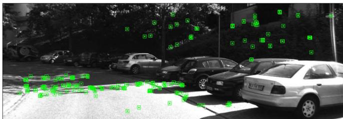
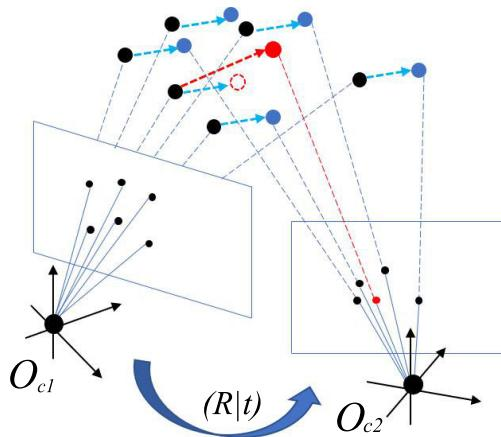
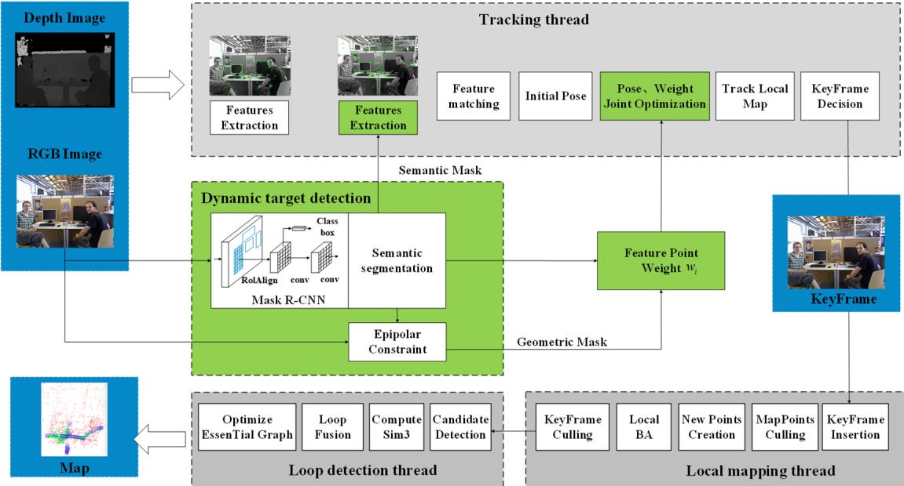
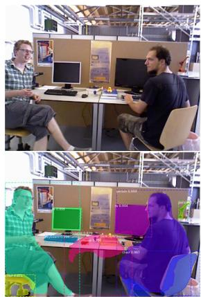

阶段 H · 专题支线（动态环境）/ Lesson 0156
别把停着的车删掉 · 语义动态与当前真在动
室外动态（Wen 2023）+ WF-SLAM（2022）：区分「可动类」和「此刻真在动」🚗
🎯 主题：语义动态类 ≠ 当前在动 · 软降权
👥 作者：Wen 等 / Zhong 等
📅 2023 (IEEE) / 2022 (IEEE Access)
本节目标
读完你应该能：① 说清「语义动态类（车/人）」和「当前真在动」是两件事；② 讲出室外动态 SLAM 用「场景流 + 匀速模型」保留停驶车的做法；③ 背出 39.5% 的真实来源 （7 个 raw 序列均值，绝非单序列）；④ 讲出 WF-SLAM 的「软降权而非硬删除」与 Eq 6 加权 BA；⑤ 记住 α = 1/深度 让阈值随深度自适应。
和前面课程怎么接
两篇都建在第三季 0043–0045 的 ORB-SLAM2 上 。室外动态 SLAM 和 0153 的 DynaSLAM/DS-SLAM 同属「语义+几何结合路线」，但多走一步：用语义先筛可动类，再用几何确认它此刻动没动 ——正好补上 0153 暴露的「误删停驶车」漏洞。WF-SLAM 则把 0153 的「删」改成「降权」，呼应 0155 的「留」哲学 。第七季 0147 的 SegNet/Mask R-CNN 就是它们的语义零件。动态这件事 第一季 0005（SW-NDT 激光侧） 也碰过「误删静止可动物体」——本节是视觉侧的对应解。
1. 核心矛盾：可动类 ≠ 当前在动
生活类比：停车场里停着的车，和马路上飞驰的车，都是「车」（语义可动类） ，但前者对定位是极好的静态特征 ，后者是污染源 。如果只用语义（像 0153 的 DynaSLAM）把「车」整类删掉，你就把停着的车也扔了——白白损失特征。
命名排雷 ：本节第一篇系统名是 Dynamic SLAM（Wen 等，2023，室外） ，和第二季的 DynaSLAM（2018） 、DynaSLAM II（2021） 、Dynam-SLAM（Yin 2023，VISLAM） 都不同——「Dynamic」和「Dyna」只差几个字母，受众极易念混。写课时一律用「全称 + 第一作者 + 年份」锚定。
两篇的共同思路，就是把这个矛盾摆平：语义只负责「圈出可动类」，几何负责「确认它此刻动没动」 。
2. 室外动态 SLAM：用场景流确认「此刻动没动」
Wen 等的室外动态 SLAM 面向自动驾驶（KITTI），在 ORB-SLAM2 上加 SegNet 语义线程 + 稀疏场景流（假定匀速）估特征点空间速度，两部分融合判定。关键公式——相邻帧特征点的空间速度（场景流）：
这句话在说什么 ：对同一个特征点，用立体深度恢复它在两帧的三维坐标 (X,Y,Z) 和 (X',Y',Z')，相减得到「它这一帧移动了多少」（空间速度）。如果移动量很大，说明它真在动；如果 ≈ 0，说明它虽然属于「可动类（车）」，但此刻静止 ——于是保留。再对同点速度做可变长窗均值滤波降噪，阈值用：
这句话在说什么 ：v_i 是当前点速度，v_i^b 是静态点平均速度（基准）。若当前点速度明显超过「基准的 (1+α) 倍」就判动态。妙处在 α = 1/深度 ：近处点对平移敏感（阈值放宽松些）、远处点对旋转敏感（阈值收紧些），阈值随深度自适应 。长时观测概率进一步压住偶发误判。
语义说「车可动」，场景流说「车没动」→ 留下 车：可动类，但场景流≈0 → 保留 车：可动类且在动 → 删除
两步融合： ① 语义圈出「车」是可动类；② 场景流算它速度· 停驶车：速度≈0 → 不超阈值 → 当静态用（保住特征）
· 行驶车：速度大 → 超 (1+α)·基准 → 判动态删掉
这张图在画什么： 一条街景，左边一辆黄框的停驶车（场景流≈0），右边一辆红框的行驶车（有运动箭头）。两者都是「车（可动类）」，但处理不同。
怎么看这张图： ① 语义通道对两车都打「可动类」标签（黄/红框），它分不清谁动 ；② 场景流给出每车速度：停驶车≈0、行驶车很大；③ 只有行驶车超阈值被删，停驶车被保留——这正是「别把停着的车删掉」的具象；④ 下方橙框点明两步融合逻辑。⑤ 这直接补上了 0153 暴露的「语义派误删静止可动物体」漏洞。
要记住的一句话： 语义只说「可动类」，场景流确认「此刻动没动」——两步融合才不误删停驶车。

原图注（室外动态 Fig. 3）： Result of removing the feature points of the dynamic area directly from the semantic information. The feature points of the car parked on the roadside can be used to improve the positioning accuracy.
怎么看这张图： 这张图是全课标题的来源——它对比「只用语义直接删动态区」和本文方法，并明确写出「路边停驶车的特征点可以用来提升定位精度」。这正是「别把停着的车删掉」的论文证据：停驶车特征被保留，反而帮定位。它直接回应 0153 的代价（语义派在静止可动物体场景略亏）。
要记住的一句话： Fig. 3 是「语义动态 ≠ 当前真在动」最直白的证据：停驶车特征该留。

原图注（室外动态 Fig. 4）： Schematic of the displacement of dynamic points and static points between adjacent frames.
怎么看这张图： 它画相邻帧间动态点与静态点的位移示意——静态点位移小（由相机运动解释）、动态点位移大（叠加自身运动）。这正是场景流 M 的几何来源：用「位移是否超出相机运动能解释的范围」判动静。配合 α=1/深度 的自适应阈值，近处/远处用不同松紧判。
要记住的一句话： Fig. 4 是场景流判据的几何直观，自绘图把它接到了「停驶车 vs 行驶车」的对照上。
诚实标注 39.5% 的来源（精读材料已核实） ：摘要说「较 ORB-SLAM2 提升 39.5%」，这是 7 个 KITTI raw 序列平均 ATE 的改善 ：ORB-SLAM2 均值 ≈ 5.911 m → 本文 ≈ 3.575 m，(5.911−3.575)/5.911 ≈ 39.5%。单看高动态序列 1003-0047 是 15.127 → 3.142（约 79%） 。写课时务必把 39.5% 当成「7 序列均值」，不要当成单序列数字。
3. 阈值随深度自适应：α = 1 / 深度
为什么阈值要随深度变？因为近处点平移 1 厘米，在图像上就移动很多像素；远处点要平移很多厘米，图像上才移动 1 像素 。如果用一个固定像素门槛，近处容易把静态点误判动、远处容易把动点漏掉。α = 1/深度 把门槛随深度收紧/放松。
α = 1/深度：近处松、远处紧 近处点（深度小 → α 大 → 阈值松） 平移 5 cm 已很明显
对平移敏感 → 门槛可放宽
远处点（深度大 → α 小 → 阈值紧） 平移 5 cm 几乎看不出
对旋转敏感 → 门槛要收紧
α = 1/深度：深度越大 α 越小，阈值 (1+α)·基准 越接近基准 → 越严
这张图在画什么： 左右对照同是「平移 5 cm」的线段，在近处图像上很明显（门槛可松），在远处几乎看不出（门槛要紧）。
怎么看这张图： ① 左图近处点：同样 5 cm 位移在图上很长，说明近处点对平移敏感，阈值放宽也不易误删；② 右图远处点：5 cm 位移在图上极短，说明远处点对旋转/微小位移敏感，阈值必须收紧才能分辨动静；③ α = 1/深度 正是把这种「近松远紧」编码进判定；④ 下方点明公式效果。
要记住的一句话： α = 1/深度 让动态判定随距离自适应，近处容平移、远处防漏动。
互动一：室外动态 SLAM 把 39.5% 当成「单序列提升」引用，对吗？
下面哪句最准？应是7序列均值 确实单序列
正确。39.5% 是 7 个 KITTI raw 序列平均 ATE 的改善（5.911→3.575 m），不是某个序列的数字。高动态单序列 1003-0047 其实是 15.127→3.142（约 79%）。把它写成单序列会严重误导读者以为「每个序列都提升 39.5%」。这是精读材料明确标注的 OCR/表述坑，必须如实说明。
不对。原文摘要的 39.5% 指 7 个 raw 序列平均 ATE 改善（5.911→3.575），单序列高动态的 1003-0047 是约 79%。若当成单序列，会低估高动态序列、高估一般序列，与原文 Table 对不上。写课时必须注明「7 序列均值」。
4. WF-SLAM：不删点，而是「软降权」
Zhong 等的 WF-SLAM（W 即 Weighted Features）走的是另一条补丁：它也不硬删动态点，而是给每个特征点赋一个权重，可靠的点贡献大、不可靠的点贡献小 ，再做「权重 + 位姿」联合 BA。
紧耦合关键：先用语义 mask 过滤掉可动类特征点，只用语义静态点估计基础矩阵 F （保证 F 准确），再用 F 算几何 mask 判定剩余点动静。极线距离阈值固定 1 像素 。当动态点比例 < τ=0.7 时直接退回原 ORB-SLAM2。权重初值 α=β=0.5，BA 中更新。加权 BA 目标：
这句话在说什么 ：传统 BA 只优化位姿 (R,t)、所有点权重都是 1；WF-SLAM 多优化一个权重 w_i——语义静态点 w_i 大、语义动态点直接 w_i=0 。于是「不可靠点」不是被扔掉，而是「说话轻轻的」：它仍参与、但几乎不影响解。这是「硬删除」与「完全保留」之间的中间路线——软降权。
软降权 vs 硬删除：不可靠点「小声说话」 硬删除（0153）
动态点直接消失（w=0 且剔除）
软降权（WF-SLAM）
w 小
动态点仍参与，但权重小（轻影响）
这张图在画什么： 左边硬删除把红点直接抹掉；右边软降权把红点保留但画得更小、标「w 小」，表示它仍进 BA 但几乎不影响结果。
怎么看这张图： ① 左图红点半透明=被剔除，特征减少（对应 0153 误删静止可动物体的亏）；② 右图红点变小=权重低，它「小声说话」——既不污染 BA，也不丢失信息；③ 这正是 WF-SLAM 相对「删派」的本质区别：不删，只降权 ；④ 权重在 BA 中随可靠性更新，可服务高层应用（如轨迹预测）。
要记住的一句话： WF-SLAM 用「软降权而非硬删除」处理动态——不可靠点小声说话，而非被静音。

原图注（WF-SLAM Fig. 1）： The overall framework of WF-SLAM. Local mapping and loop closing thread are consistent with ORB SLAM2. The green boxes are our contributions.
怎么看这张图： 绿色框是 WF-SLAM 的增量：紧耦合语义+几何动态检测 → 特征点权重 → 加权联合优化。注意局部建图/回环仍沿用 ORB-SLAM2（又是「打补丁」结构）。它和 0153 的区别就在这层绿色补丁：不是「mask 掉再跑」，而是「赋权重再联合优化」。
要记住的一句话： Fig. 1 是 WF-SLAM「加权」路线的总框架，绿框即其增量。

原图注（WF-SLAM Fig. 3）： Selection of feature points on sequence walking_xyz.
怎么看这张图： 它展示 walking_xyz 序列上特征点如何被筛选/赋权——动态区域（人）的点被降权，静态区域的点被保留并大权重。配合 Table I 的数字（walking_xyz ATE 0.0127，比 ORB-SLAM2 0.7508 提升 98.30%），说明「软降权」在动态序列上确实有效，且比硬删除（DynaSLAM 0.015）略优。
要记住的一句话： Fig. 3 是 WF-SLAM 加权筛选的可视化，对应 98.30% 的精度提升。
互动二：WF-SLAM 的 τ=0.7 退回机制是什么意思？
下面哪句最准？动态少就交还ORB 动态多才用
正确。WF-SLAM 设 τ=0.7：当动态特征点占比小于 70% 时，直接退回原 ORB-SLAM2（不做加权过滤）。理由是「动态少时，原 ORB 已经够准，硬要加权反而白跑分割网络、拖慢速度」。所以它主要价值在「高动态」区间——这恰好说明它的定位是「动态场景的补丁」，安静场景不抢戏。注意这是「动态少就交还」，不是「动态多才用」。
不对，说反了。τ=0.7 是「动态特征点占比 < 70% 时退回原 ORB-SLAM2」——也就是动态少的时候它主动不处理，把活交还给 ORB；动态多（>70%）时才上加权过滤。所以它是「动态多才用」，你选项写成了「动态多才用」？不，你写的是「动态少就交还 ORB」的反面，正好错。正确是：动态少→交还 ORB；动态多→启用加权。
「可动」是一个类别属性，「在动」是一个当下事实 —— 四种组合要分开处理
① 可动类 ＋ 此刻静止 → 保留
路边停着的车
场景流 ≈ 0
✓ 它的点是好的，别删
② 可动类 ＋ 此刻在动 → 剔除
开走的车
场景流大
✗ 会带来错误约束，必须剔
③ 不可动类 ＋ 静止 → 正常用
墙、地面、栏杆
✓ 这是定位的主力
绝大多数特征点属于这一类
④ 不可动类 ＋ 却动了 → 危险
被人搬走的箱子
语义没报警
只能靠几何兜住
语义只看第 ① 列（是不是可动类），几何才看得出第 ② 行（此刻动没动）
所以室外动态那篇要加「场景流」确认现状：可动类 ≠ 当前在动
这张图在说什么： 把「物体属于可动类吗」和「它此刻真的在动吗」两个问题拆成两维，得到四种组合。图里每一格都配了一个真实例子和你该怎么做。
怎么看这张图： ① 先看左上角第 ① 格——路边停着的车，它是可动类（语义会报警）但场景流几乎为零，所以它的特征是好的，不该删；② 再看右上角第 ② 格——开走的车，语义和几何都同意剔掉；③ 注意右下角第 ④ 格是个陷阱：语义说它不可动，可它偏偏被人搬走了，这时语义完全不报警，只能靠几何兜住；④ 底部两句总结了这个分工：语义看「是不是可动类」，几何看「此刻动没动」，两者缺一不可。
要记住的一句话： 可动类 ≠ 当前真在动——一刀切「可动类一律剔除」，代价就是把停驶车辆那些本来能用来定位的特征点全丢了。
5. 代价账：两篇的取舍
代价项
室外动态 SLAM（Wen 2023）
WF-SLAM（Zhong 2022）
实时性
作者明说因分割慢不实时；仅 stereo
310.65 ms/帧（≈3.2 fps），远非实时
静态/少动态
少数序列略差于 ORB（过滤掉部分点）
sitting_xyz 仅 5.43%（增益薄，分割白跑）
硬件/数据
必须 stereo；动态占满图则失败
依赖 Mask R-CNN（GPU + 训练数据）
核心贡献
保留停驶车（语义动态≠当前真动）
软降权（不删只降权）+ 权重可服务高层
本课小结 ：本节两篇都在补 0153 暴露的同一个洞——语义只说「可动类」，不说「此刻动没动」 。室外动态 SLAM 用「场景流 + 匀速 + α=1/深度 自适应阈值」保留停驶车；WF-SLAM 用「软降权」把不可靠点变成小声说话。代价分别是「不实时 / 仅 stereo」与「310 ms / 依赖 Mask R-CNN」。两者都把 0155 的「留」哲学往前推了一步。
6. 读完你应该能回答
「语义可动类」和「当前真在动」为什么是两件事？各举一个例子。
室外动态 SLAM 怎么用场景流保留停驶车？α = 1/深度 让阈值怎么随距离变？
39.5% 这个数字的真实来源是什么？为什么不能当成单序列提升？
WF-SLAM 的「软降权」和 0153 的「硬删除」本质区别是什么？Eq 6 多了优化什么？
WF-SLAM 的 τ=0.7 退回机制在说什么？它主要价值在哪个区间？
Dynamic SLAM（Wen 2023）与 DynaSLAM / DynaSLAM II / Dynam-SLAM 名字分别差在哪？
课后练习（答案收起，点开看解析）
如果只用语义（不确认场景流），把「车」整类删掉，在停车场场景会损失什么？
展开查看答案
停车场里大量车是停着的，它们是稳定、密集、纹理丰富的静态特征，对定位极有用。只用语义整类删「车」，等于把这批好特征全扔了，特征骤减 → 位姿估计变差（这正是 0153 DynaSLAM 在静止可动物体场景略逊 ORB-SLAM2 的原因）。室外动态 SLAM 用场景流确认「车此刻没动」把它们救回，Fig. 3 明确写了「停驶车特征可提升定位精度」。
为什么 α = 1/深度 是「近处松、远处紧」，而不是反过来？
展开查看答案
因为图像位移 ≈ 世界位移 / 深度（透视投影）。近处（深度小）同样 5 cm 世界位移对应很大图像位移，易分辨 → 阈值可放宽（α 大，1+α 大）；远处（深度大）5 cm 世界位移对应极小图像位移，易和噪声混淆 → 阈值必须收紧（α 小，1+α 接近 1）才能区分「真动」与「相机旋转导致的表观位移」。所以近松远紧由透视几何决定。
WF-SLAM 软降权相比硬删除，对「轨迹预测」这类高层任务有什么额外好处？
展开查看答案
硬删除直接把动态点丢弃，高层任务拿不到任何动态信息。软降权保留动态点并给权重，这些权重随可靠性更新——论文指出「优化后的权重可进一步用于高层应用（如轨迹预测）」。也就是说，WF-SLAM 虽不输出 6DoF 轨迹（不像 DynaSLAM II），但留下了「哪些点可能动、多不可靠」的软信号，比纯删除更有用。
把本节两篇和 0153 放一起，总结「语义结合路线」在「停驶车」问题上的演进。
展开查看答案
0153 DynaSLAM/DS-SLAM：语义整类删 → 误删停驶车（亏静态特征）。本节室外动态 SLAM：语义圈可动类 + 场景流确认「此刻动没动」→ 保留停驶车（补洞）。本节 WF-SLAM：不删，软降权 → 动态点小声说话，既不污染也不丢失。演进方向是「从硬删 → 确认后删 → 不删只降权」，对静止可动物体的处理越来越温柔，静态场景的亏本越来越小。